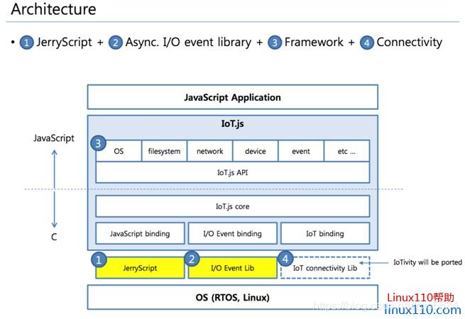
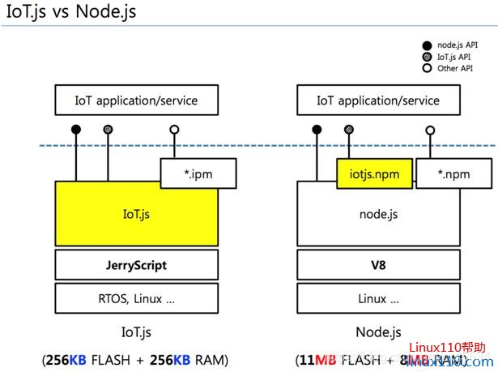
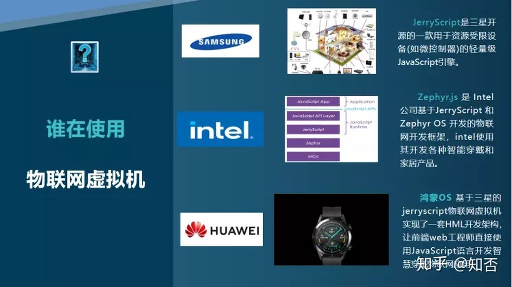
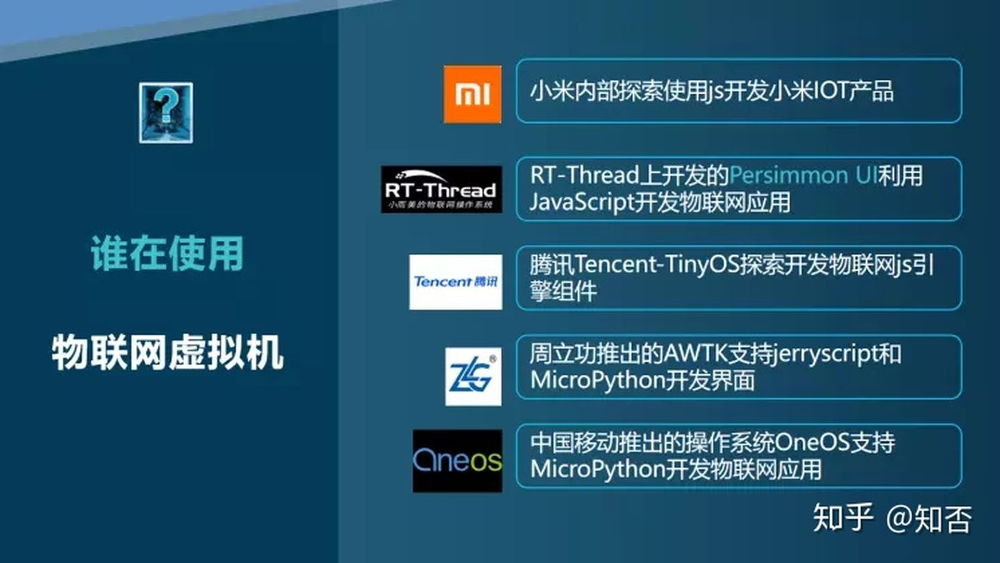

20. Jerryscript 简介
20.1. 概述
Jerryscript 是由三星开发的一款JavaScript引擎，是为了让JavaScript开发者能够构建物联网应用。物联网设备在CPU性能和内存空间上都有着严重的制约。
因此，三星设计了JerryScript引擎，JerryScript 是一个轻量级的 JavaScript 引擎，它可以运行在受限制的设备上，例如微控制器：
只有几 KB RAM 能运行引擎的设备（<64 KB RAM）。
只能为代码引擎提供有限 ROM 空间的设备（<200 KB ROM）。
该引擎支持设备上编译，提供从 JavaScript 到外设的访问。
JerryScript的主要特征：
完全符合ECMAScript 5.1标准。
为ARM Thumb-2编译时，二进制大小为160K。
大量优化以降低内存消耗。
使用C99编写，以实现最大的可移植性。
快照支持将JavaScript源代码预编译为字节码。
成熟的C API，易于嵌入到应用程序中。
IoT.js 旨在为物联网提供一个基于 Web 技术的可相互操作的服务平台。IoT.js 的目标是要在资源受限的设备上良好运行，例如只有几 KB 的 RAM。




20.2. demo 使用介绍
JS 里 print 函数利用 jerrycript 实现的 demo 。
利用 IoT.js 来学习 jerryscript 如何使用，IoT.js 提供了一套 JS 运行时库。
RT-Thread 里的 jerryscript 。